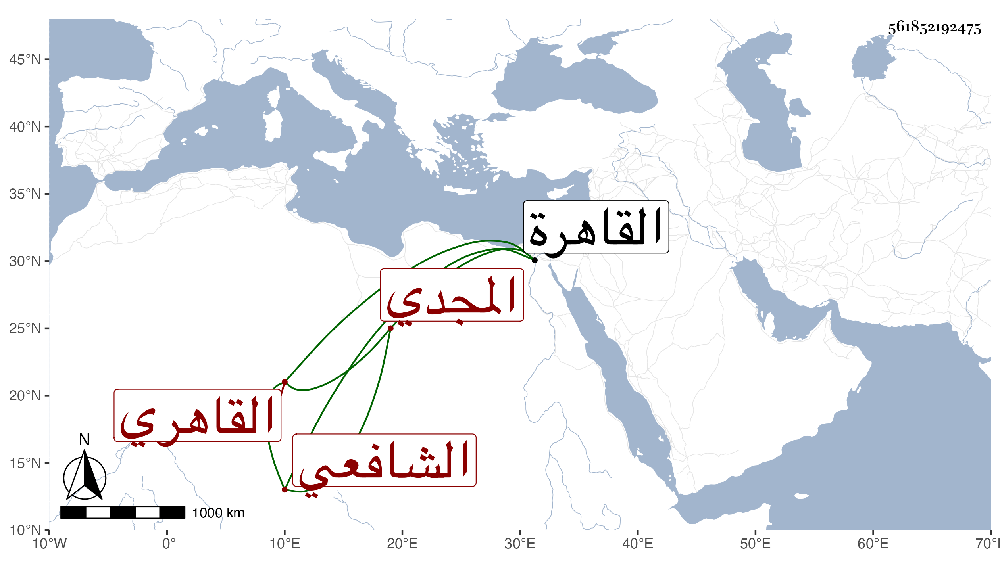

0902Sakhawi.DawLamic.ITO20230111-ara1.EIS1600.561852192475
Biography ID: 561852192475
أحمد بن رجب بن طيبغا المجدي أحد مقدمي الألوف الشهاب بن الزين القاهري الشافعي ويعرف بابن المجدي نسبة لجده . ولد في العشر الأول من ذي الحجة سنة سبع وستين وسبعمائة بالقاهرة ، ونشأ بها فحفظ القرآن وبعض المنهاج ثم جميع الحاوي وألفية النحو وغير ذلك وتفقه بالبلقيني وابن الملقن والكمال الدميري والشرف موسى بن البابا وبه انتفع في الحاوي لمزيد تقدمه فيه والشمس العراقي وعنه أخذ الفرائض وغيرها وكذا أخذ الفرائض والحساب عن التقي بن عز الدين الحنبلي والعربية عن الشمس العجيمي وقيد عنه شرحا على الشذور في آخرين منهم في الميقات ومتعلقاته الجمال المارداني وكان يخبر أنه سمع الموطأ على المحيوي القروي وجد في الطلب واجتهد بأعظم سبب بحيث كان يحكي أنه مر على الميمي خمسا وستين مرة ، وبرع في فنون تقدم بذكائه المفرط الذي قل أن يوازى فيه وأشير إليه بالتقدم قديما وصار رأس الناس في أنواع الحساب والهندسة والهيئة والفرائض وعلم الوقت بلا منازع ، واشتهر بإجادة إقراء الحاوي ، وانتدب للإقراء وانتفع به الفضلاء وأخذ عنه الأعيان من كل مذهب طبقة بعد أخرى وممن لازمه وانتفع به شيخنا ابن خضر والنور الوراق المالكي والشرف بن الجيعان والسيد علي والشهاب السجيني والهيتمي والبدر المارداني والزين زكريا والبدر حسن الأعرج ، وحكى لي عنه أنه صعد القلعة للاجتماع بالأشرف في قضية ضاق صدرا بها فما تيسر فرجع وقد تزايد كربه فاتفق أنه دخل مدرسة قريبة من القلعة فتوضأ وصلى ركعتين ورفع رأسه فوجد بجانب محرابها مكتوبا :
| دعها سماوية تجري على قدر | لا تعترضها بأمر منك تنفسد |
فاستبشر بذلك وآلى أن قضى أمره أن يضمنه في أبيات فلم يلبث أن جاء قاصد السلطان بطلبه وحصل الغرض فقال في أثناء أبيات :
| فقلت للفكر لما صار مضطربا | وخانني الصبر والتفريط والجلد |
| دعها سماوية تجري على قدر | لا تعترضها بأمرمنك تنفسد |
| فخفني بخفي اللطف خالقنا | نعم الوكيل ونعم العون والمدد |
وكذا حكاها لي عنه الشرف بن الجيعان وعين المكان ، وكنت ممن أخذ عنه ، وممن حضر عنده الشيخ الشهاب الكلوتاتي المحدث الشهير ، وله تصانيف كثيرة فائقة منها الدوريات وجزء في الحناني وآخر في قول المديون لرب الدين ضع وتعجل ومختصر في الفرائض بديع لم يسبق إليه سماه إبراز لطائف الغوامض في إحراز صناعة الفرائض وآخر أكبر منه لكنه لم يشتهر كاشتهاره لكونه لم يتم فإنه قسمان علمي وتم في مجلد وعملي لم يتم كتب منه كراريس وتعرض فيه لخلاف الأربعة سماه الكافي وشرح الجعبرية والرسالة الكبرى وهي ستون بابا لشيخه المارداني والتلخيص لابن البناء في الحساب وهو عظيم الفائدة بل هو من أعظم تصانيفه في مجلد ضخم والرسالة لابن السراج وله أيضا في الحساب المبتكرات في دون كراس وكذا من تصانيفه إرشاد الحائر في العمل بربع الدائر وزاد المسافر والقول المفيد في جامع الأصول والمواليد والدرر في مباشرة القمر والدر اليتيم في حل الشمس والقمر وهو نفيس في بابه وكشف الحقائق في حساب الدرج والدقائق والمنهل العذب الزلال في معرفة حساب الهلال والفصول في العمل بالمقنطرات ورسالة في العمل بالجيب والضوء اللائح في وضع الخطوط على الصفائح ورسالة في الربع المستر وأخرى في الربع الهلالي وكراسة في معرفة الأوساط وأخرى في استخراج التواريخ بعضها من بعض وله في إخراج القبلة بثلاث نقط من غير دائرة اثنا عشر بيتا وشرحها والتسهيل والتقريب في طرق الحل والتركيب والإشارات في كيفية العمل بالمحلولات والمنثورة في علوم شتى وله مصنف في الحديث وكتابة جيدة على الفتاوي ، كل ذلك مع الديانة والأمانة والثقة والتواضع والسكون والسمت الحسن وإيراد النكتة والنادرة والظرف والانجماع عن الناس بمنزله المجاور للأزهر والاستغناء عنهم بإقطاع بيده بل كان يبر الطلبة والفقراء أيضا وبلغني أنه كان يقول إذا استغرقت في غوامض الميقات أحس بالظلام في قلبي وأني كالممقوت . وولي مشيخة الجانبكية الدوادارية بالشارع ولاه إياها الأشرف وهو المبتكر للتصوف فيها لكون واقفها كان عتيقه وأسند إليه وصيته . واستمر على طريقته الجميلة حتى مات في ليلة السبت حادي عشر ذي القعدة سنة خمسين عن أربع وثمانين سنة ودفن من الغد بالقرب من الطويلة في مشهد حسن أمهم شيخنا ولم يخلف بعده في فنونه مثله ولم يذكره شيخنا مع واقعة دينية اتفقت له عارضه فيها بمقصد صالح من كل منهما أشار إليها في سنة ثلاثين . وقد قال العيني في تاريخه كان من أهل العلم والدين كاف الشر عن الناس منقطعا عنهم ملازما لبيته وعنده بعض مسك اليد مع القدرة على الدنيا انتهى ، ومستنده في ذلك فيما ظهر لي أنه لأجل كون عياله كن إماء كان يخرج لهن ما يحتجن إليه في كل يوم بالمعروف خوفا من تبذيرهن ويصل ذلك كذلك على لسان النسوة إلى البدر لكونه من جيرانه وإلا فلم أر من طلبته الفقراء ونحوهم إلا وهو يذكر بره وصلته إليه رحمه الله وإيانا .
